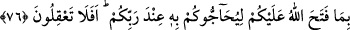
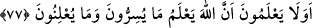

inkâr içinde hayatlarını geçiren atalarını taklîd edip dururken onların nasıl yola gelmesi
beklenebilir? Onlardan böyle bir şeyi beklemeyin; çünkü ataları Tevrât’ı tahrîf
etmişlerdi. Şimdikiler de onların bu durumunu biliyorlar.
76. (Münâfıklar) inananlarla karşılaştıklarında “İman ettik” derler. Birbirleriyle
başbaşa kaldıkları vakit ise: Allah’ın size açtıklarını (Tevrât’taki bilgileri),
Rabbiniz katında sizin aleyhinize hüccet getirmeleri için mi onlara anlatıyorsunuz;
bunları düşünemiyor musunuz? derler.
Âyetteki “diye mi” anlamındaki “hemze” nehy içindir. Yâni müslümanlara böyle bir
şey haber vermeyin, demektir. Allah’ın onlara açtığı şey Peygamber Efendimiz’in
vasıflarıdır. Onlara böyle bir şeyin kimse tarafından bilinmeyen saklı bir hazîne, bir sır
olduğunu bildirmek için açıklama anlamı, açmak fiili ile anlatılmıştır.
“Sizlere karşı hüccet olarak kullansınlar, diye” bölümü, “onlara anlatıyorsunuz”
bölümüne bağlıdır. Yâni “o amelinizi delîl göstererek yarın huzûr-ı ilâhîde sizi
sustursunlar diye mi, böyle yapıyorsunuz?” demektir. “Rabbinizin katında” demek,
hükmü ve kitabında demektir. “Allah katında” derken de kezâ onun kitabı ve şerîatı
kasdedilir.
Müslümanlara münâfıklık yapanlar, her ne kadar bu delîl getirme olayını düşünüp
kasdetmemişlerse de, akıllarının kıtlığı ve görüşlerinin zayıflığı sebebiyle yapmış
oldukları bu iş, bu sonucu doğuruyordu.
Yahûdîlerin bir bölümü, arkadaşlarını kınamış ve hemen ardından da “düşünmüyor
musunuz?” demişlerdir. Yâni siz hiç yapmış olduğunuz bu ahmaklığın aleyhinize delîl
olarak kullanılacağını düşünmüyor musunuz?” demektir. Böyle olunca, inkâr edilenin ilk
başta akılsızlık olduğu kabûl edilmiş olur. İkinci bir mânâ: “Siz bunun, tüm açıklığına
rağmen, aptalca bir şey olduğunu bilmiyor musunuz da, îkâza ihtiyaç duyuyorsunuz”
şeklinde olur. O zaman inkâr edilen şeyin iş yapıldıktan sonraki akılsızlık olduğu
görülür.
77. Onlar bilmezler mi ki, gizlediklerini de açıkça yaptıklarını da Allah
bilmektedir.
“Bilmiyorlar mı?” derken aslında onların bu işi bildiklerine ve bu yüzden de